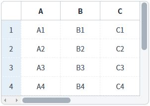
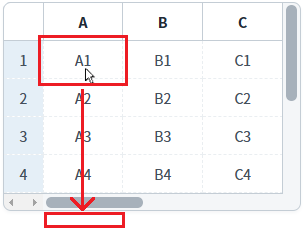
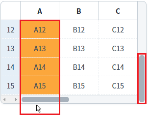
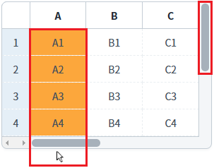
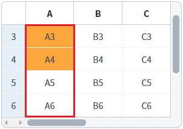
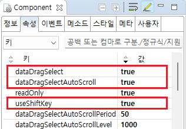

GridView의 'dataDragSelectAutoScroll' 속성을 설정한 예제입니다. 이 속성은 GridView 영역 안에서 드래그를 통해 셀의 범위를 선택하고 이어서 마우스를 GridView 영역 밖으로 이동(상하좌우) 시켰을 때, 마우스의 방향에 따라 셀의 선택을 연장하는 기능을 제공합니다. 이때 마우스 방향에 맞춰 스크롤이 자동으로 이동합니다.
이 예제는 마우스 사용이 가능한 환경에서 정상 동작합니다.
'dataDragSelectAutoScroll' 속성 사용
'dataDragSelectAutoScroll' 속성 미사용
예제 영역 ''dataDragSelectAutoScroll' 속성 사용'에 구성된 GridView에서 테스트합니다.1
STEP 1: 초기 상태 확인하기
GridView에 세로, 가로 스크롤이 있습니다.
Image 1.브라우저(Chrome) 실행 예시

2
STEP 2: 마우스를 첫 번째 행의 'A' 컬럼의 셀에서 GridView 영역의 아래로 드래그합니다.
Image 2.브라우저(Chrome) 실행 예시

3
STEP 3: 실행 결과를 확인합니다.
마우스가 GridView 영역 밖(아래)으로 이동하면 세로 스크롤이 아래로 이동되며 셀 선택이 연장됩니다.
Image 3.브라우저(Chrome) 실행 예시

예제 영역 "(기본 설정) 'dataDragSelectAutoScroll' 속성 미사용"에 구성된 GridView에서 테스트합니다.1
STEP 1: 초기 상태 확인하기
GridView에 세로, 가로 스크롤이 있습니다.
Image 4.브라우저(Chrome) 실행 예시
2
STEP 2: 마우스를 첫 번째 행의 'A' 컬럼의 셀에서 GridView 영역의 아래로 드래그합니다.
Image 5.브라우저(Chrome) 실행 예시
3
STEP 3: 실행 결과를 확인합니다.
화면에 보여지는 영역의 셀만 선택됩니다. 세로 스크롤을 아래로 이동하여 선택된 셀을 확인합니다. 행 번호 '1~4'에 해당하는 셀만 선택됩니다.
Image 6.브라우저(Chrome) 실행 예시

Image 7.브라우저(Chrome) 실행 예시 - 세로 스크롤 이동 시]

1
GridView의 속성을 정의합니다.
[필수] dataDragSelect="true"
[default:false, true] 여러 개의 셀들을 드래깅으로 선택. useShiftKey 속성을 사용할 때 유효하며, dataDragDrop 속성과 함께 사용할 수 없음.
[필수] useShiftKey="true"
복수 셀의 선택에 대한 적용 여부.
[필수] dataDragSelectAutoScroll="true"
[default: false, true] 드래깅을 통해 복수의 셀을 선택할 경우(dataDragSelect="true"), 마우스가 화면 밖을 벗어나면 자동으로 스크롤이 되는 기능.
[선택] dataDragSelectAutoScrollLevel="설정 값"
[default: 1300](단위: ms) dataDragSelectAutoScroll 기능 사용 시 현재의 스크롤링 속도가 2배로 빨라지기까지의 시간.
예시) dataDragSelectAutoScrollLevel="1000" //1초로 설정
[선택] dataDragSelectAutoScrollPeriod="설정 값"
[default: 70](단위: ms) dataDragSelectAutoScroll 기능 사용 시 스크롤링이 발생하는 주기.
예시) dataDragSelectAutoScrollPeriod="50"
Image 8.웹스퀘어 스튜디오의 Component View - 속성 설정 예시

예제 영역 '예제 테스트 타이틀'에 구성된 GridView에서 테스트합니다.Example 1.Source
<!-- gridView 의 소스 본문 예시 --> <w2:gridView dataDragSelect="true" useShiftKey="true" dataDragSelectAutoScroll="true" dataDragSelectAutoScrollLevel="1000" dataDragSelectAutoScrollPeriod="50"> <!-- 중략 --> </w2:gridView>
dataDragSelect
useShiftKey
dataDragSelectAutoScroll
dataDragSelectAutoScrollLevel
dataDragSelectAutoScrollPeriod